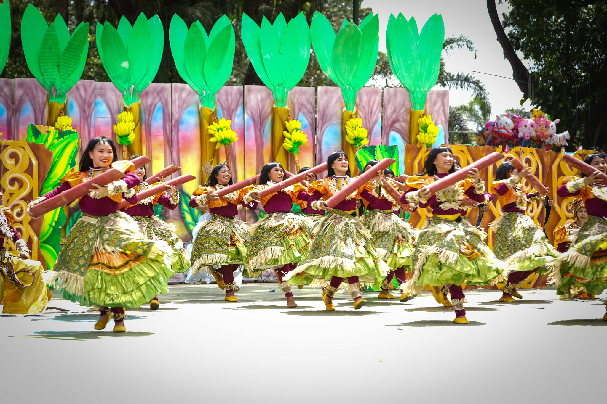
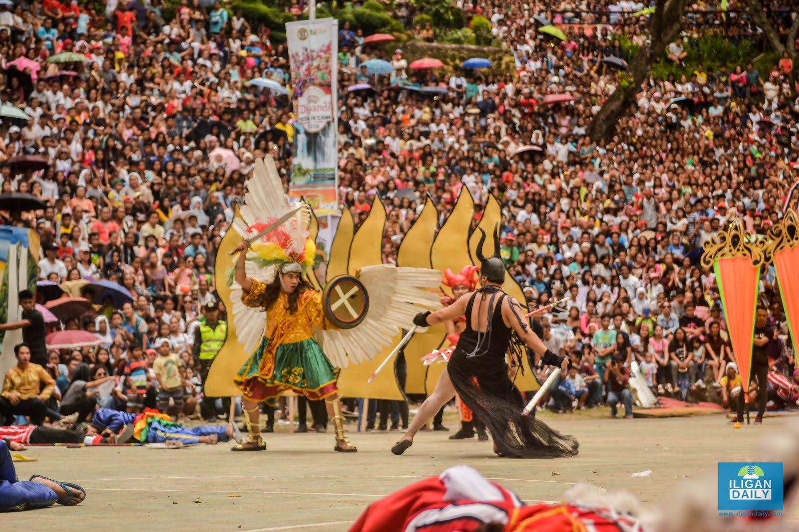
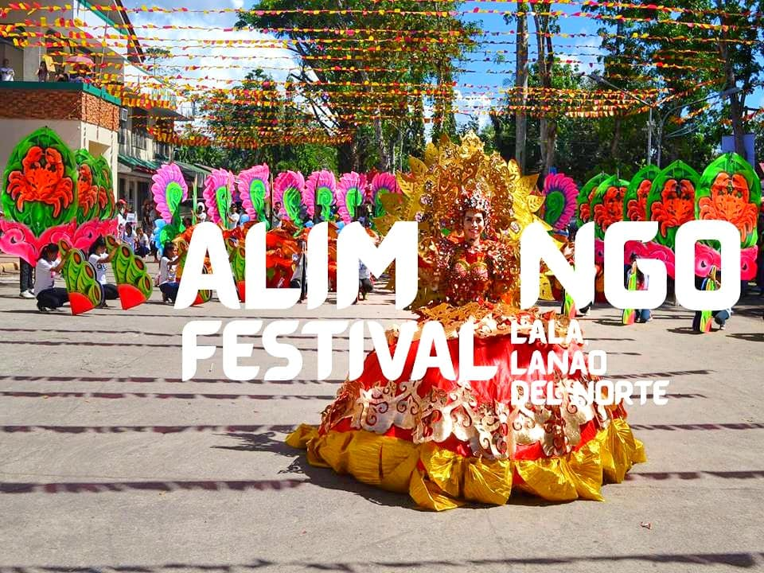
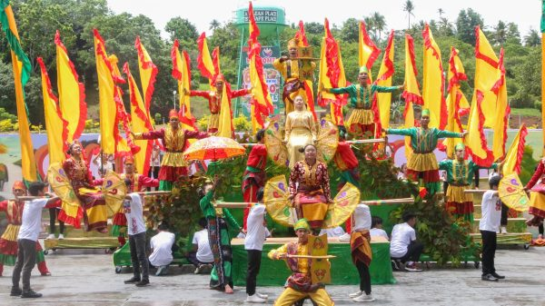

Sagingan Festival
The Sagingan Festival is a vibrant celebration rooted in the rich cultural heritage of the Philippines. Traditionally held in coastal communities, the festival honors the bountiful harvest of saging (banana) plants, which are essential to local livelihoods. Its origins trace back to indigenous practices where villagers expressed gratitude for a successful harvest and sought blessings for future seasons. Over the years, the festival has evolved into a colorful event featuring street dances, traditional music, and colorful costumes inspired by banana leaves and fruits. It also serves as a platform to showcase local crafts and culinary delights. The Sagingan Festival not only celebrates agricultural abundance but also promotes community unity and cultural pride, preserving age-old traditions while adapting to contemporary expressions of festivity.
Dyandi Festival
The Dyandi Festival is a colorful cultural event celebrated in the Philippines, specifically in Zambales province. Its roots date back to local traditions when residents celebrate the Dyandi, a traditional bamboo musical instrument utilized in communal ceremonies and celebrations. The festival focuses on promoting Zambales' rich cultural heritage, agricultural richness, and craftsmanship. Through the celebration, vibrant street dances, music performances, and rituals with the Dyandi are the main attractions, emphasizing community and tradition. The event also includes local cuisine, art and craft, and cultural exhibitions that ensure tourism and regional pride. Dyandi Festival not only maintains the indigenous music and traditions but also unites residents and visitors in the celebration, showcasing Zambales' distinct identity and cultural heritage.
Alimango Festival
The Alimango Festival is an active celebration of festivities in the Philippines, more specifically in beach towns famous for their rich supply of crabs. The event began as an expression of the local fishing folks' appreciation of a rich harvest of crabs, which form the backbone of their livelihood and food. According to tradition, fishermen and inhabitants unite to thank God through elaborate street dances, parades, and special dining events with freshly prepared alimango (mud crabs). The Alimango Festival highlights the rich aquatic resources of the area and attracts tourists while promoting sustainable fishing methods. It also brings to the forefront local culinary practices, with alimango dishes as its key attraction. The Alimango Festival promotes community spirit, pride in local culture, and eco-awareness and thus becomes a much-beloved festival that celebrates the richness of the sea as well as the courage of its people.
Sagayan Festival
Sagayan is an ancient Filipino dance and martial arts form that comes from the southern Philippines, especially the Moro and Lumad tribes. The word "Sagayan" itself is used to refer to a warrior dance that shows how combat and bravery were done by early Filipino warriors, usually during cultural festivals and celebrations. It involves spirited, rhythmic steps, mimicry of combat, and utilization of old weapons like spears, shields, and swords. It is both a cultural manifestation and a means to preserve and commemorate the martial culture of Filipino forebears. Sagayan is typically executed by males dressed in bright attires that represent courage, power, and pride of community. Nowadays, it is exhibited in cultural performances and festivals to showcase Filipino identity and to preserve indigenous culture of the south of the Philippines.
